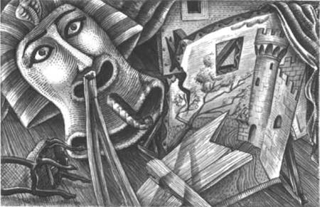

Chương 4

Hộp số 5
Ngày hôm sau, Raoul lại đến Nhà hát Opera. Anh đến hành lang phía sau sân khấu. Anh bước đến cánh cửa phòng thay đồ của Christine.
Cánh cửa đóng chặt. Raoul dừng lại trước phòng thay đồ. Anh nghe thấy hai giọng nói. Hai người đang nói chuyện trong phòng thay đồ.
‘Em phải yêu anh mãi mãi,’ một giọng đàn ông nói. ‘Em chỉ được hát cho mình anh thôi.’
‘Vâng. Tôi chỉ hát cho anh thôi,’ giọng một cô gái trả lời. Đó là giọng của Christine. Cô nói rất chậm.
Đột nhiên cánh cửa mở ra. Christine bước ra khỏi phòng thay đồ.
Raoul muốn nói chuyện với Christine, nhưng cô không nhìn thấy anh. Mắt cô mở nhưng không nhìn thấy Raoul! Cô ta đang ngủ ư? Anh không hiểu.
Christine đi dọc hành lang và rẽ vào góc rẽ.
‘Christine đang nói chuyện với ai thế này?’ Raoul tự hỏi. ‘Tôi phải tìm hiểu xem đó là ai!’
Cửa phòng thay đồ vẫn đang mở. Raoul nhìn vào trong. Nhưng phòng không còn ai nữa. Phòng đã trống trơn!
——
Tối hôm đó, Nhà hát Opera Paris lại có một buổi tiệc khác. Quản lý mời Philippe và Raoul đến dự. Tiệc được tổ chức tại chính nhà hàng trong Nhà hát Opera. Có rất nhiều vị khách nổi tiếng và quan trọng đến dự tiệc. Họ sẽ thưởng thức bữa tiệc trước rồi mới đi xem biểu diễn.
Các vị khách dùng bữa và trò chuyện. Họ nói về Carlotta. Họ nói về Christine. Họ cũng nói về Bóng ma Nhà hát Opera.
Raoul đảo mắt nhìn xung quanh căn phòng. Anh thấy một người đàn ông cao, gầy. Người đàn ông đang uống một ly rượu. Người này không nói chuyện với ai. Nhưng hắn ta nhìn chằm chằm vào Raoul.
‘Philippe, người đàn ông cao gầy kia là ai vậy?’ Raoul hỏi.
‘Đó là Người Ba Tư,’ Philippe đáp. ‘Hắn là một gã kỳ quái. Hắn rất thông minh. Hắn từng là một kiến trúc sư. Đã giúp kiến trúc sư của Nhà hát Opera Paris thiết kế nhà hát. Người Ba Tư thường đến đây vào buổi tối.’
Rồi người quản lý bước đến chỗ Philippe và Raoul.
‘Anh có nhìn thấy Bóng ma không?’ Philippe hỏi. ‘Mọi người đều đang bàn tán về Bóng ma!’ Philippe bật cười.
‘Không, thưa ngài. Tôi chưa bao giờ gặp Bóng ma,’ người quản lý trả lời với giọng tức giận. ‘Nhưng tôi đã nghe kể về câu chuyện vô lý đó rồi. Bà Richard đã kể với tôi rằng: “Bóng ma ngồi trong một cái hộp đêm nào cũng như đêm nào.” Còn gã Ba Tư cũng đã kể với tôi về Bóng ma!’
‘Tôi từng gặp gã Ba Tư,’ Philippe nói. ‘Gã là một người rất thông minh. Và tôi đã nghe câu chuyện về cái hộp. Hộp số 5 luôn luôn trống rỗng đêm nào cũng như đêm nào. Có phải đó là cái hộp dành cho Bóng ma không?’
‘Đúng vậy,’ người quản lý nói. ‘Hộp số 5 lúc nào cũng trống. Mọi người không ai thích hộp số 5. Họ nói: “Hộp số 5 không may mắn. Đó là hộp dành cho Bóng ma. Bóng ma xem tất cả các buổi biểu diễn từ hộp số 5.” Tôi thì không tin! Tôi chưa từng thấy Bóng ma bao giờ!’
‘Nhưng Carlotta đã nhìn thấy Bóng ma,’ Philippe nói. ‘Cô ấy đã nói gì với anh về hắn?’
‘Ôi, đó chỉ là chuyện ngớ ngẩn,’ người quản lý nói. Cô ấy nói: “Bóng ma có khuôn mặt trắng bệch. Giống như một người chết vậy!” Tất cả mọi người đều kể cho tôi nghe những câu chuyện ngớ ngẩn như vậy!’
‘Anh có tin lời của Carlotta không?’ Philippe hỏi.
‘Không, không, không phải,’ người quản lý nói. ‘Nhưng Carlotta rất sợ hãi. Tôi muốn ngăn chặn câu chuyện này lại. Tôi muốn Carlotta hát tối nay. Cái hộp dành cho Bóng ma - hộp số 5 - sẽ không còn trống nữa tối nay. Tôi vừa bán hết bốn vé vào hộp số 5 rồi.’
Bữa tiệc đã kết thúc. Mọi người rời khỏi nhà hàng. Họ chuẩn bị đi xem biểu diễn.
Hộp số 5 tối hôm đó không còn trống. Có hai người đàn ông và hai người phụ nữ đang ngồi trong hộp.
Christine tối hôm đó không hát. Carlotta đã hát. Nhưng Carlotta rất lo lắng. Cô không hát hay cho lắm. Cô cứ nhìn về hướng hộp số 5.
Nhà hát Opera được thắp sáng rực rỡ. Có rất nhiều đèn dầu đang cháy trên tường. Trên trần nhà treo rất nhiều đèn chùm bằng pha lê lớn. Đèn chùm treo lơ lửng trên trần nhà. Ngay phía trên khán giả.
Khi buổi biểu diễn kết thúc, đã xảy ra một tai nạn kỳ lạ. Chiếc đèn chùm lớn gần hộp số 5 đột nhiên rơi xuống. Tiếng rơi rất lớn - tiếng kính vỡ. Bốn người ở trong hộp số 5 bị thương vì kính vỡ. Một người phụ nữ bị thương rất nghiêm trọng.
Sau tối hôm đó, không ai mua vé vào hộp số 5 nữa. ‘Bóng ma đang tức giận,’ mọi người bàn tán. ‘Hộp số 5 là hộp của Bóng ma!’
Sau đó, nhiều điều kỳ lạ khác đã xảy ra ở Nhà hát Opera Paris.

Một nghệ sĩ chơi nhạc đã biến mất. Không ai tìm thấy anh ta.
Mục lục
- Tiêu đề
- Mục lục
- Chú thích về Tác giả
- Chú thích về Câu chuyện Này
- Những Nhân vật trong Câu chuyện Này
- 1 Thiên thần Âm nhạc
- 2 Một Bữa tiệc tại Nhà hát Opera
- 3 Raoul Đến Nhà hát Opera
- 4 Ghế Số 5
- 5 Chiếc Gương trong Phòng Thay Đồ
- 6 Vũ hội Hoá trang
- 7 Câu chuyện của Người Ba Tư
- 8 Christine Biến mất!
- 9 Bên dưới Nhà hát Opera
- 10 Hồ nước và Cây cổ thụ
- 11 Bóng ma Nhà hát Opera
- Bản quyền